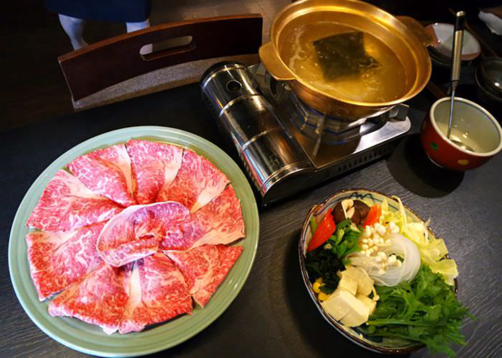

萬月樓
雅 懷石 (八品)- - - - -1800(人)
花 懷石 (八品)- - - - -1200(人)
日式懷石料理源於日本茶道文化，是一種追求季節性食材、平衡美感和營養價值的高級料理方式。
它強調食材的原汁原味，講究季節的變化與食材的新鮮度，旨在讓用餐者在味覺上和視覺上得到滿足。
午餐定食
(小钵、主食、蒸物、強肴、食事、汁物)(例假日不提供)
刺身定食-----------------680
鲇魚燒定食---------------680
天婦羅定食---------------680
牛肉陶板定食-------------680
烤鰻魚定食---------------780
特品紅喉魚鹽燒定食-------980
特級和牛涮涮鍋/壽喜燒- - - - -2800(人)
前菜、燒物、煮物、酢物、鍋物來自日本宮崎縣的頂級和牛，搭配豐富的蔬菜、豆腐和麵條，即便是單純的昆布湯底，也能展現出其獨特風味。
和牛的脂肪分佈均勻，肉質細嫩多汁，使每一口都充滿滿滿的美味。和牛涮涮鍋不僅是一項美食，更是享受、分享和交流的文化體驗。
